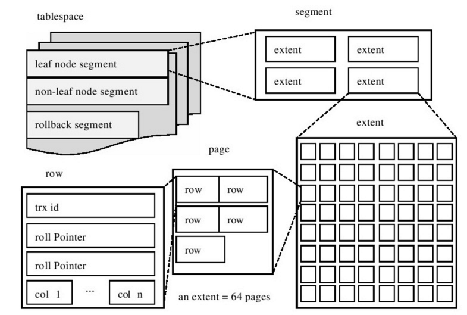

InnoDB一个事务型的存储引擎，设计目标是处理大容量数据库系统，本身其实就是基于MySQL后台的完整数据库系统，MySQL运行时Innodb会在内存中建立缓冲池，用于缓冲数据和索引。
数据库引擎
一、MYSQL支持的数据库引擎
查看mysql支持的数据库引擎：
show engines;，以下是常用到的几种数据库引擎：
- ISAM是一个定义明确且历经时间考验的数据表格管理方法，它在设计之时就考虑到数据库被查询的次数要远大于更新的次数。
- 因此，ISAM执行读取操作的速度很快，而且不占用大量的内存和存储资源。
- ISAM的两个主要不足之处在于，它不支持事务处理，也不能够容错。
- MyISAM是MySQL的ISAM格式和缺省的数据库引擎，除了提供ISAM里所没有的索引和字段管理的大量功能，MyISAM还使用一种表格锁定机制来优化多个并发的读写操作，其代价是你需要经常运行OPTIMIZE TABLE命令来恢复被更新机制所浪费的空间。
- 它没有提供对数据库事务的支持，也不支持行级锁和外键，因此当插入或更新数据时即写操作需要锁定整个表，效率便会低一些。
- HEAP,也叫Memory(堆内存)，允许只驻留在内存里的临时表格。驻留在内存里让HEAP要比ISAM和MYISAM都快，但是它所管理的数据是不稳定的，而且如果在关机之前没有进行保存，那么所有的数据都会丢失。在数据行被删除的时候，HEAP也不会浪费大量的空间。
- HEAP表格在你需要使用SELECT表达式来选择和操控数据的时候非常有用。
- InnoDB一个事务型的存储引擎，有行级锁定和外键约束。它设计目标是处理大容量数据库系统，本身其实就是基于MySQL后台的完整数据库系统，MySQL运行时Innodb会在内存中建立缓冲池，用于缓冲数据和索引。
- 但是该引擎不支持FULLTEXT类型的索引
- 它没有保存表的行数，当SELECT COUNT(*) FROM TABLE时需要扫描全表。
二、MyISAM和InnoDB之间的区别
事务支持
- MyISAM不支持事务，而InnoDB支持。
- InnoDB的AUTOCOMMIT默认是打开的，即每条SQL语句会默认被封装成一个事务，自动提交，这样会影响速度，所以最好是把多条SQL语句显示放在begin和commit之间，组成一个事务去提交。
- MyISAM是非事务安全型的，而InnoDB是事务安全型的，默认开启自动提交，宜合并事务，一同提交，减小数据库多次提交导致的开销，大大提高性能。
存储结构
- MyISAM的表存储成3个文件，文件的名字与表名相同，拓展名分别为frm、MYD、MYI。
- frm文件存储表的结构
- MYD文件存储数据，是MYData的缩写
- MYI文件存储索引，是MYIndex的缩写
- InnoDB所有的表都保存在同一个数据文件中（也可能是多个文件，或者是独立的表空间文件），InnoDB表的大小只受限于操作系统文件的大小，一般为2GB。
- MyIsam索引和数据分离，InnoDB在一起，MyIsam天生非聚簇索引，最多有一个unique的性质，InnoDB的数据文件本身就是主键索引文件，这样的索引被称为“聚簇索引”
- MyISAM的表存储成3个文件，文件的名字与表名相同，拓展名分别为frm、MYD、MYI。
存储空间
- MyISAM可被压缩，存储空间较小。支持三种不同的存储格式：静态表(默认，但是注意数据末尾不能有空格，会被去掉)、动态表、压缩表。
- InnoDB：需要更多的内存和存储，它会在主内存中建立其专用的缓冲池用于高速缓冲数据和索引。
可移植性、备份及恢复
- MyISAM数据是以文件的形式存储，所以在跨平台的数据转移中会很方便。在备份和恢复时可单独针对某个表进行操作。
- InnoDB免费的方案可以是拷贝数据文件、备份 binlog，或者用 mysqldump，在数据量大的时候就有点儿难用了。
事务支持
- MyISAM强调的是性能，每次查询具有原子性,其执行数度比InnoDB类型更快，但是不提供事务支持。
- InnoDB提供事务支持事务，外部键等高级数据库功能，具有事务提交、回滚和崩溃修复能力的事务安全型表。
AUTO_INCREMENT
- MyISAM可以和其他字段一起建立联合索引。引擎的自动增长列必须是索引，如果是组合索引，自动增长可以不是第一列，他可以根据前面几列进行排序后递增。
- InnoDB中必须包含只有该字段的索引。引擎的自动增长列必须是索引，如果是组合索引也必须是组合索引的第一列。
锁差异
- MyISAM：只支持表级锁，用户在操作myisam表时，select，update，delete，insert语句都会给表自动加锁。
- 同一个表上的读锁和写锁是互斥的，MyISAM并发读写时如果等待队列中既有读请求又有写请求，默认写请求的优先级高，即使读请求先到，所以MyISAM不适合于有大量查询和修改并存的情况，那样查询进程会长时间阻塞。
- InnoDB：支持事务和行级锁，是innodb的最大特色。
- 行锁大幅度提高了多用户并发操作的新能。
- InnoDB的行锁，只是在WHERE的主键是有效的，非主键的WHERE都会锁全表的。
- MyISAM：只支持表级锁，用户在操作myisam表时，select，update，delete，insert语句都会给表自动加锁。
主键
- MyISAM允许没有任何索引和主键的表存在，索引都是保存行的地址。
- InnoDB如果没有设定主键或者非空唯一索引，就会自动生成一个6字节的主键(用户不可见)，数据是主索引的一部分，附加索引保存的是主索引的值。
- InnoDB的主键范围更大，最大是MyISAM的2倍。
表的具体行数
- MyISAM保存有表的总行数，如果
select count(*) from table;会直接取出出该值。 - InnoDB没有保存表的总行数(只能遍历)，如果使用
select count(*) from table；就会遍历整个表，消耗相当大，但是在加了where条件后，myisam和innodb处理的方式都一样。
- MyISAM保存有表的总行数，如果
CURD操作
- MyISAM如果执行大量的SELECT，MyISAM是更好的选择。
- InnoDB如果你的数据执行大量的INSERT或UPDATE，出于性能方面的考虑，应该使用InnoDB表。
- DELETE 从性能上InnoDB更优，但DELETE FROM table时，InnoDB不会重新建立表，而是一行一行的删除。
- 在InnoDB上如果要清空保存有大量数据的表，最好使用truncate table这个命令。
外键
- MyISAM不支持外键
- InnoDB支持。
查询效率
- 没有
where的count(*)使用MyISAM要比InnoDB快得多,因为MyISAM内置了一个计数器，count(*)时它直接从计数器中读，而InnoDB必须扫描全表。 - 所以在
InnoDB上执行count(*)时一般要伴随where，且where中要包含主键以外的索引列。 - 为什么这里特别强调“主键以外”？因为
InnoDB中primary index是和raw data存放在一起的，而secondary index则是单独存放，然后有个指针指向primary key。所以只是count(*)的话使用secondary index扫描更快，而primary key则主要在扫描索引同时要返回raw data时的作用较大。MyISAM相对简单，所以在效率上要优于InnoDB，小型应用可以考虑使用MyISAM。
- 没有
全文索引
- MyISAM支持(FULLTEXT类型的)全文索引
- InnoDB不支持(FULLTEXT类型的)全文索引，但是innodb可以使用sphinx插件支持全文索引，并且效果更好。
扩展： 全文索引是指对char、varchar和text中的每个词（停用词除外）建立倒排序索引。MyISAM的全文索引其实没啥用，因为它不支持中文分词，必须由使用者分词后加入空格再写到数据表里，而且少于4个汉字的词会和停用词一样被忽略掉。
扩展
聚簇索引是将数据存储与索引放到了一块，找到索引也就找到了数据；非聚簇索引则是将数据存储与索引分开，索引结构的叶子节点指向了数据的对应行的地址。
一、基础
对比
InnoDB支持事务，MyISAM不支持
- 对于InnoDB每一条SQL语言都默认封装成事务自动提交，这样会影响速度，所以最好把多条SQL语言放在begin和commit之间，组成一个事务
InnoDB支持外键，而MyISAM不支持
- 对一个包含外键的InnoDB表转为MYISAM会失败
InnoDB是聚集索引，MyISAM是非聚集索引
- 使用B+Tree作为索引结构，数据文件是和（主键）索引绑在一起的（表数据文件本身就是按B+Tree组织的一个索引结构），必须要有主键，通过主键索引效率很高。但是辅助索引需要两次查询，先查询到主键，然后再通过主键查询到数据。因此，主键不应该过大，因为主键太大，其他索引也都会很大。
- MyISAM也是使用B+Tree作为索引结构，索引和数据文件是分离的，索引保存的是数据文件的指针。主键索引和辅助索引是独立的。
- InnoDB的B+树主键索引的叶子节点就是数据文件，辅助索引的叶子节点是主键的值
- MyISAM的B+树主键索引和辅助索引的叶子节点都是数据文件的地址指针。
count(*)统计- InnoDB不保存表的具体行数，执行select count(*) from table时需要全表扫描
- MyISAM用一个变量保存了整个表的行数，执行上述语句时只需要读出该变量即可，速度很快，通过
show table status like 'table_name'命令拿到rows值(InnoDB是近似值，MyISAM是精确值)
1
2
3
4
5
6
7
8
9
10
11
12
13
14
15
16
17
18Name: table_myisam
Engine: MyISAM
Version: 10
Row_format: Fixed
Rows: 3
Avg_row_length: 65
Data_length: 195
Max_data_length: 18295873486192639
Index_length: 1024
Data_free: 0
Auto_increment: NULL
Create_time: 2019-09-16 23:05:37
Update_time: 2019-09-16 23:06:17
Check_time: NULL
Collation: utf8_general_ci
Checksum: NULL
Create_options:
Comment:Innodb不支持全文索引(5.7后支持)，而MyISAM支持全文索引，查询效率上MyISAM要高；
MyISAM表格可以被压缩后进行查询操作
InnoDB支持表、行(默认)级锁，而MyISAM支持表级锁
InnoDB表必须有主键（用户没有指定的话会自己找或生产一个主键），而Myisam可以没有
- 如果创建的表没有主键，或者把一个表的主键删掉了，那么 InnoDB 会自己生成一个长度为 6 字节的 rowid 来作为主键，它表示的是每个引擎用来唯一标识数据行的信息。
- 对于有主键的 InnoDB 表来说，这个 rowid 就是主键 ID，是由系统生成的
表结构存放形式不同
- InnoDB表包含两部分，即表结构定义(frm)和表数据(ibd)，表数据既可以存在共享表空间里，也可以是单独的文件，由参数
innodb_file_per_table控制 - InnoDB表数据文件本身就是按B+Tree组织的一个索引结构，树的叶子节点data域保存了完整的数据记录。
- MyISAM表则是由表定义文件(frm)，是数据文件(myd)，是索引文件(myi)三部分组成。
- MyISAM索引文件和数据文件是分离的，树的叶子节点data域仅保存数据记录的地址；
- InnoDB表包含两部分，即表结构定义(frm)和表数据(ibd)，表数据既可以存在共享表空间里，也可以是单独的文件，由参数
二、进阶
InnoDB存储引擎的所有数据都被逻辑地存放在一个空间内，称为表空间，而表空间由段(sengment)、区(extent)、页(page)(一些文档中又称为块block)组成。

表空间：InnoDB把数据保存在表空间内，不只是存储表和索引，还保存了回滚段、双写缓冲区等。表空间可以看作是InnoDB存储引擎逻辑结构的最高层，它本质上是一个由一个或多个磁盘文件组成的虚拟文件系统，
分类
- 独立表空间：每一个表都将会生成以独立的文件方式来进行存储，需要开启innodb_file_per_table参数为on。*.frm表结构定义文件，.ibd数据、索引、表的内部数据字典信息表文件
- 共享表空间：所有数据保存在一个单独的表空间里面，而这个表空间可以由很多个文件组成，一个表可以跨多个文件存在，所以其大小限制不再是文件大小的限制，而是其自身的限制。从Innodb的官方文档中可以看到，其表空间的最大限制为64TB，也就是说，Innodb的单表限制基本上也在64TB左右了，当然这个大小是包括这个表的所有索引等其他相关数据。
段segment：表空间是由各个段组成的，常见的段有数据段、索引段、回滚段等
区extent：区是由连续的页(Page)组成的空间，每个区大小都为1MB，为了保证页的连续性，InnoDB存储引擎每次从磁盘一次申请4-5个区。
- 默认情况下InnoDB存储引擎的页大小为16KB，即一个区中有64(1MB／16KB)个连续的页。
页page
- 页是InnoDB存储引擎磁盘管理的最小单位，每个页默认16KB。
- 常见页类型
- 数据页(B-tree Node)
- undo页(undo Log Page)
- 系统页(System Page)
- 事物数据页(Transaction System Page)
- 插入缓冲位图页(Insert Buffer Bitmap)
- 插入缓冲空闲列表页(Insert Buffer Free List)
- 未压缩的二进制大对象页(Uncompressed BLOB Page)
- 压缩的二进制大对象页(compressed BLOB Page)
行row
InnoDB存储引擎是面向行的(row-oriented)，即数据是按行进行存放的，每个页存放的行记录也是有硬性定义的，最多允许存放16KB/2 - 200 = 7992行记录。
三、扩展
- 聚簇索引和非聚簇索引
- 聚簇索引：将数据存储与索引放到了一块，找到索引也就找到了数据
- 非聚簇索引：将数据存储与索引分开，索引结构的叶子节点指向了数据的对应行的地址